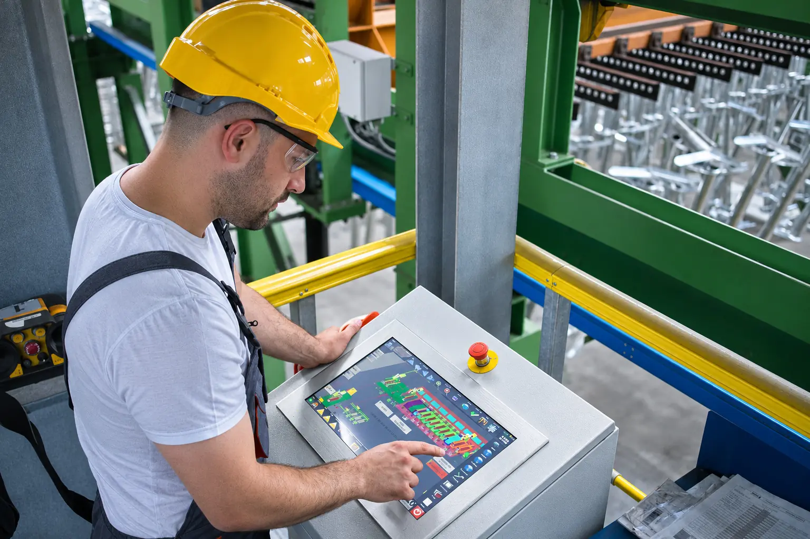

Soluciones integrales
para tu operación.
Once líneas de servicio que cubren el ciclo completo: ingeniería, ejecución en campo y mantenimiento.
Catálogo de servicios
Tu operación.
Nuestra especialidad.
Tecnologías y metodologías
Trabajamos con lo que tu planta ya usa
Experiencia en marcas, plataformas y estándares reconocidos en la industria.
PLCSCADAKukaFanucYaskawaBIMPMBOKITSEMedia tensiónIluminación LEDÁreas clasificadasEficiencia energética
Nuestro proceso
Un proceso claro,
de la idea a la puesta en marcha.
Cada proyecto sigue cuatro etapas definidas para que sepas exactamente qué esperar, cuándo y con qué resultado.
PASO 01
Diagnóstico
Visita técnica, evaluación de la instalación y levantamiento de tus requerimientos.
PASO 02
Ingeniería y propuesta
Planos, cálculos, alcance técnico, cronograma y una cotización clara.
PASO 03
Ejecución en campo
Montaje e implementación con personal calificado y estándares de seguridad.
PASO 04
Entrega y soporte
Pruebas, puesta en marcha, documentación y acompañamiento posterior.
Hagamos realidad tu proyecto
¿Qué servicio
necesita tu planta?
Te ayudamos a definir el alcance y te enviamos una cotización detallada.